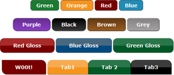

DL CSS Button Pack

Download v1.2 for FREE!
The DL Button Pack is intended to make it easy to build your own buttons and mix and match features. Follow the directions below on how to make use of our buttons on your own site. You may use the whole CSS file in your site, or copy and paste the specific buttons you want. This is inteded for people with little or no CSS knowledge but we wont shy away any advanced users. There are THREE main button base types, they are named; dl_sm, dl_md, and dl_lg. From here, you can select either a plain button, radient button, glossy buttons or transition buttons. Once that has been determined, you are able to add more features to the button such as text shadow, box shadow, rounded corners, glow and a dip.
To install the css file into your site, the following code needs to be inserted inside the <head></head> tags:
<link rel="stylesheet" href="dl-css-buttons_1.2.css" type="text/css" />Like this:
<!DOCTYPE html PUBLIC "-//W3C//DTD XHTML 1.1//EN" "http://www.w3.org/TR/xhtml11/DTD/xhtml11.dtd">
<html xmlns="http://www.w3.org/1999/xhtml">
<head>
<link rel="stylesheet" href="dl-css-buttons_1.2.css" type="text/css" />
<meta http-equiv="Content-Type" content="text/html; charset=utf-8" />
<title>DL CSS Buttons</title>
</head><body>Content goes here</body</html >
Choose a base, or create your own!
Picking an base will set the font, font size, color, and padding around the font. These bases can be altered if needed for specific font or color changes. You MUST have a base set otherwise your buttons will look very bland. These three bases have a lot of similar features, but they were inteded to be changed by the user if needed.
dl_sm
The dl_sm base has attributes of:
color:#ffffff;
font-family: verdana, sans-serif;
font-size:14px;
font-weight:bold;
display:inline-block;
padding:5px 15px;
text-decoration:none;
dl_md
The dl_sm base has attributes of:
color:#ffffff;
font-family: verdana, sans-serif;
font-size:14px;
font-weight:bold;
display:inline-block;
padding:8px 25px;
text-decoration:none;
dl_lg
The dl_sm base has attributes of:
color:#ffffff;
font-family: verdana, sans-serif;
font-size:14px;
font-weight:bold;
display:inline-block;
padding:10px 35px;
text-decoration:none;
Plain Buttons
-The following buttons are using the "dl_sm" base, unless otherwise noted.
plain-"color", eg: plain-red
code: <a href="#" class="dl_sm plain-red">Button Name</a>
Red class="dl_sm plain-red"
Blue class="dl_sm plain-blue"
Green class="dl_sm plain-green"
Orange class="dl_sm plain-orange"
Yellow class="dl_sm plain-yellow"
Purple class="dl_md plain-purple"
Black class="dl_md plain-black"
Brown class="dl_md plain-brown"
Grey class="dl_md plain-grey"
Snazz it up!
With our buttons you can add different attributes to your buttons. For example take the class="dl_sm plain-red" button example from above, pretty boring right? If you want to add more rounded corners to the button, you can add these attributes into your class:
Rounded Corners
class= "dl_sm curvey plain-red", class="dl_sm curvey plain-blue"
You get this:
Red Blue
There are other attribute you can use instead of curvey. They are as follows:
curve:
Green 6 pixel radius
curvey:
Orange 10 pixel radius
curvier:
Black 15 pixel radius
curviest:
Purple 20 pixel radius
left-curve:
Curve to the left! 6 pixel radius
right-curve:
Curve to the right! 6 pixel radius
Text Shadow
-gives a slight shadow behind the text.
textShadow Text Shadow! class= "dl_sm curvey textShadow plain-orange"
Box Shadow
-gives your box some character!
boxShadow Blue Box Shadow! class="dl_sm curvey boxShadow plain-blue"
Dip
-button will slightly dip down upon press
dip Red & Dip! class="dl_sm curvey dip boxShadow plain-red"
Glow
-button will glow using mulitiple colors to choose.
boxGlow, boxGlowY, boxGlowG, boxGlowR, boxGlowP, boxGlowB, boxGlowO orange glow class="dl_sm curvey boxGlowY plain-orange"
**These attributes can be added to ANY buttons
Radient Buttons
radient-"color", eg: radient-blue
<a href="" class="dl_md radient-blue>Button Name</a>
The following buttons are using the "dl_md" base and the "curve" and "boxShadow" attributes to give it rounded corners and shadow, see the blue box above for explanation.
Red class="dl_md curve boxShadow radient-red"
Orange class="dl_md curve boxShadow radient-orange"
Blue class="dl_md curve boxShadow radient-blue"
Green class="dl_md curve boxShadow radient-green"
Yellow class="dl_md curve boxShadow radient-yellow"
Purple class="dl_md curve boxShadow radient-purple"
Black class="dl_md curve boxShadow radient-black"
Brown class="dl_md curve boxShadow radient-brown"
Grey class="dl_md curve boxShadow radient-grey"
Lets see something snazzy.....
BackNext
class="dl_md left-curve radient-blue", class="dl_md right-curve radient-blue"
StartPauseResumeclass="dl_md left-curve radient-green", class="dl_md radient-green", class="dl_md right-curve radient-green"
Gloss Buttons
gloss-"color", eg: gloss-orange
<a href="" class="dl_lg gloss-blue">Button Name</a>
Gloss buttons are two tone colors giving a gloss effect. This example uses the base of "dl_lg" and uses "curvey" and "textShadow" attributes.
Red Gloss class="dl_lg curvey textShadow gloss-red"
Blue Gloss class="dl_lg curvey textShadow gloss-blue"
Green Gloss class="dl_lg curvey textShadow gloss-green"
Orange Gloss class="dl_lg curvey boxShadow gloss-orange"
Yellow Gloss class="dl_lg curvey textShadow gloss-yellow"
Purple Gloss class="dl_lg curvey textShadow gloss-purple
Black Gloss class="dl_lg curvey textShadow gloss-black"
Brown Gloss class="dl_lg curvey textShadow gloss-brown"
Grey Gloss class="dl_lg curvey textShadow gloss-grey"
Transition buttons
trans-"color", eg: trans-orange
<a href="" class="dl_lg trans-green">Button Name</a>
These buttons make use of the CSS3 property "transition".
Red Transition! class="dl_lg curve dip boxShadow trans-red"
Blue Transition! class="dl_lg curve dip boxShadow trans-blue"
Green Transition! class="dl_lg curve dip boxShadow trans-green"
Orange class="dl_lg curve dip boxShadow trans-orange"
Yellow! class="dl_lg curve dip boxShadow textShadow trans-yellow"
Purple! class="dl_lg curve dip boxShadow trans-purple"
Black! class="dl_sm curve dip boxShadow trans-black"
Brown! class="dl_md curve dip boxShadow trans-brown"
Grey! class="dl_md curve dip boxShadow trans-grey"
More Snazz.....
Use the following attributes to add a curve to one edge.
"top-left", "bottom-left", "top-right", "bottom-right" Uses 12 pixel border radius.
W00t! class="dl_lg bottom-left top-right boxShadow trans-red"
Im a tab!No, Im a tab.Lets just be tabsclass="dl_sm top-left top-right boxShadow gloss-orange"
The DL CSS Button Pack is free and open, alter as you see fit.
Compatable with Chrome 16+, Safari 3.1+, Firefox 4+, Opera 11+, IE 10 Beta +(Gloss buttons, and Transition buttons are not supported in IE 8, 9 unfortunately)
DL Button Pack 1.2 created by Drew D. Lenhart 2012-2015
Originally created by d.lenhart under Moray Labs LLC.